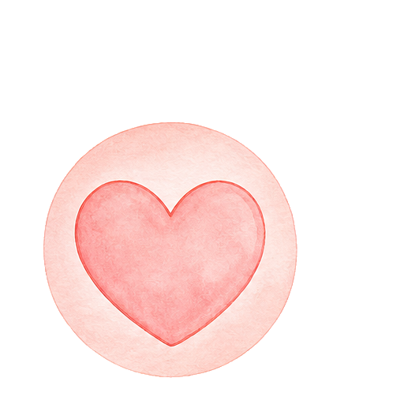
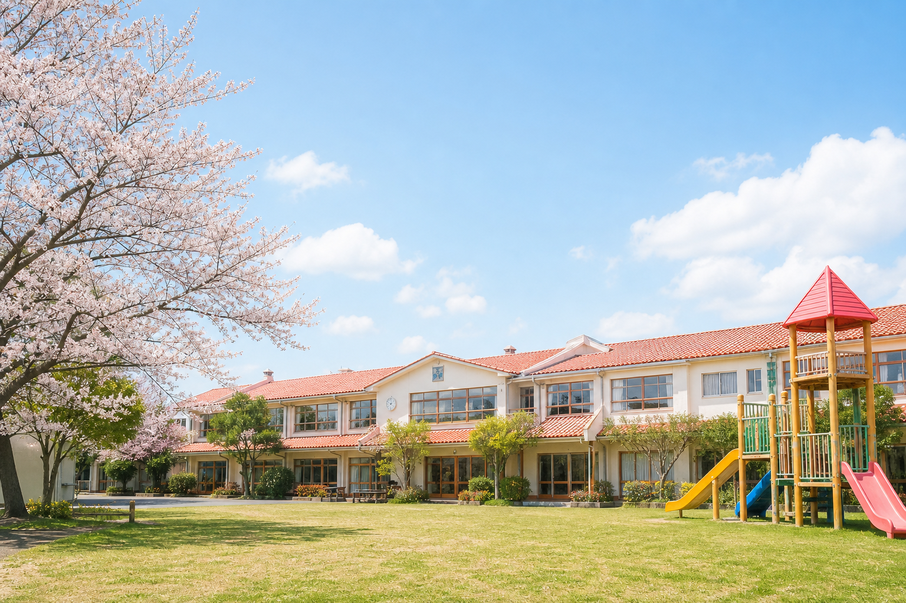
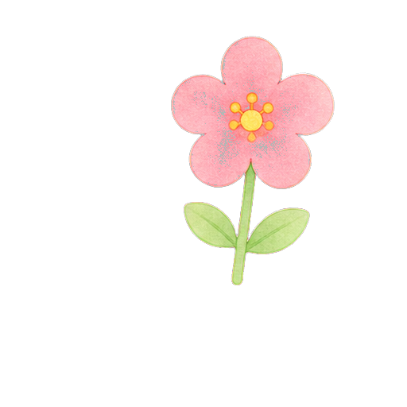
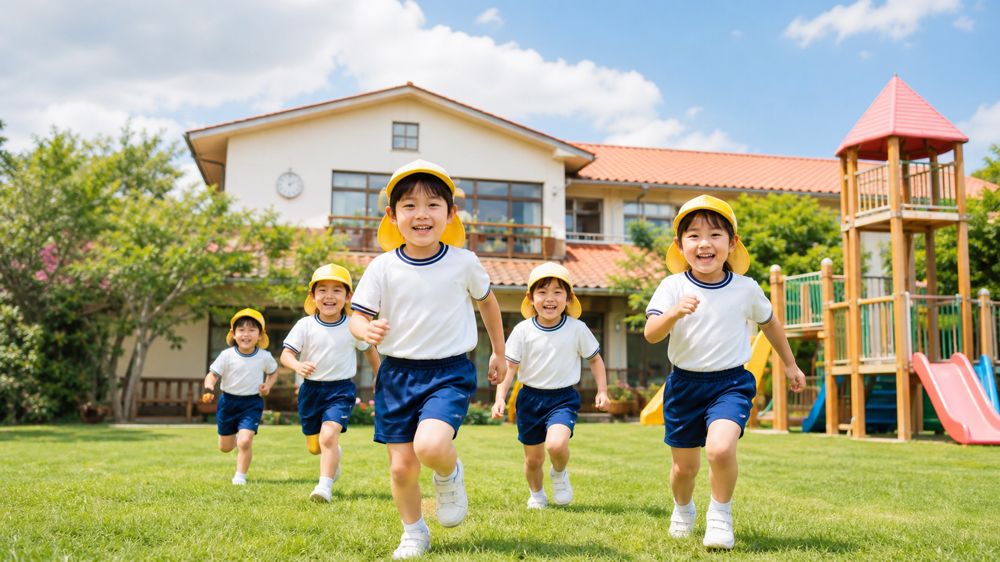
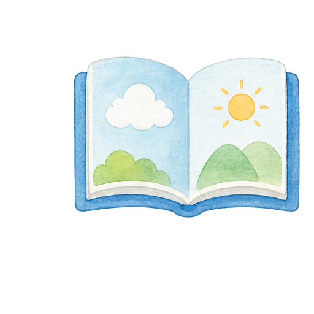
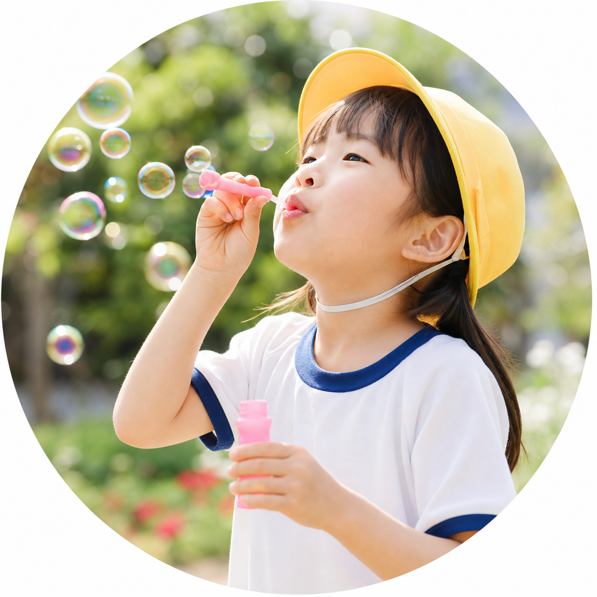

徳
素直な心、感謝する心、思いやりの心を日々の生活の中で育みます。


心豊かに、やさしく、たくましく。
愛児幼稚園では、毎日の遊びや行事、制作、自然とのふれあいを通して、 子どもたちの「やってみたい」という気持ちを育みます。
知識を教え込むのではなく、友だちや先生との関わりの中で自分で考え、 表現し、最後まで取り組む力を伸ばすことを大切にします。

徳・体・知のバランスを整え、幼児期に必要な心と体と学びの基礎を育てます。

素直な心、感謝する心、思いやりの心を日々の生活の中で育みます。
園庭遊びや運動あそびを通して、健やかでたくましい体をつくります。

制作、音楽、言葉、数への興味を広げ、学ぶ楽しさを感じる環境を整えます。
安全性と、子どもたちが自分から遊びたくなる環境づくりを伝えるエリアです。
制作やごっこ遊び、音楽活動など、年齢に合わせた活動が広がる保育室。
走る、登る、砂で遊ぶなど、体を動かしながら友だちとの関わりを深めます。

絵画や工作を通して、手を動かす楽しさと表現する力を育てます。

自然や季節を感じる活動を、日常の保育と行事に取り入れます。
正課、課外活動、遊び場、給食など、毎日の保育内容を整理しています。